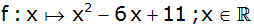
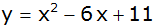
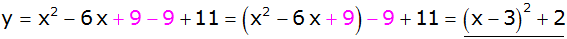
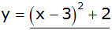
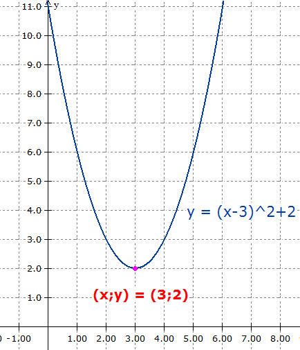

|
Darstellung von
Quadratischen Funktionen |
|
Jede Funktion läßt sich durch die folgenden 4
gleichberechtigten Arten darstellen. Dabei genügt es, eine der
4 Arten anzugeben. Die anderen drei kann man dann erzeugen. |
|
1.Funktionsschreibweise |
 |
| 2. Funktionsgleichung bzw.
Scheitelform |
| Die Scheitelform erhält man durch quadratische Ergänzung der
Funktionsgleichung und anschließender Anwendung einer
binomischen Formel. |
|
 |
|  |
|  |
|
| 3. Wertetabelle |
| Die Koordinaten des Scheitel-punktes
erkennt man am kleinsten y-Wert. |
|
| x |
- 2 |
- 1 |
0 |
1 |
2 |
3 |
4 |
5 |
6 |
7 |
8 |
| y |
27 |
18 |
11 |
6 |
3 |
2 |
3 |
6 |
11 |
18 |
27 |
|
| 4. Funktionsgraph |
| Besonders
einfach läßt sich bei einer quadratischen Funktion der Graph
zeichnen, wenn man die Koordinaten des Scheitelpunktes kennt und
dann eine Schablone der Normalparabel anlegt. |
|
 |